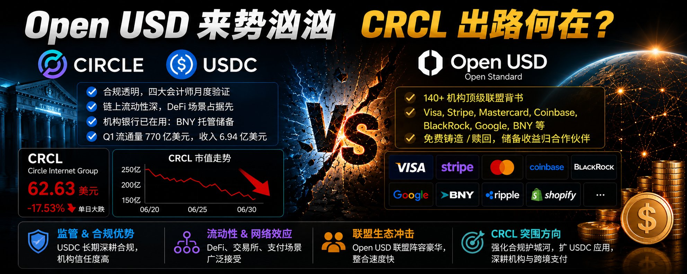

← 返回公开书架#1 · wufantouzi ·
今天这个市场
crcl 的市值只有 150 亿美金了
如果 140 家巨头 1 家 1 亿美金多点
可以凑得齐 150 亿美金收购 crcl
但拿 150 亿肯定造不出另一个 crcl
微信支付宝之后
各家巨银行巨头及字节美团京东也做了各种尝试
他们也拿了各种支付牌照
每个人都有自己的用户和体系
但到今天为止市占率依旧微不足道
crcl 用了十年时间走过的路
如果其他家靠凑 140 家就能打败
把创业这件事想的太容易了
一个女人需要 10 个月怀孕生下孩子
但是 10 个女人 1 个月也不能生下孩子
尊重时间 尊重经营 尊重市场
Quote
Charging is getting faster and faster
Mileage is getting higher and higher
Five minutes of charging beats five minutes of refueling
Mileage increase is about the same
And charging station density is approaching gas stations
June
Li Auto: 30,000 units
XPeng and NIO
1:26 PM · Jul 1, 2026
#2 · tothemoonjustin ·
#3 · kakapawang1 ·
午饭总，讲经不辩经就好。您把道理讲透以后，在股价大跌时努力辩经，既不必要，也反映了您性格上的某种不足。
#4 · hk_boob ·
不是因为140家巨头搞了ousd，这都老掉牙的信息了，6月初就有传闻了，真正的原因是他被剔除罗素5大核心成长股指数了，指数基金要被迫卖出，而且未来新增资金也不会再买入crcl了，因为他都不在指数里了，失去了一个长期买家。被剔出去，基金经理没有选择，必须卖，这是短期暴跌因素。
#5 · Somi786686 ·
#6 · tokyorock2 ·
#7 · hahaho124 ·
#8 · 0xmagnolia ·
炒美股应该炒币圈没有的东西，炒币要炒美股没有的东西
#9 · shiweixie3 ·
#10 · pianpianxiaiU ·
#11 · com1223 ·
CRCL 这个点我觉得不能只按市值看。
真正贵的是“结算网络 + 合规入口 + 使用习惯”。支付牌照能买，用户习惯和金融机构接入很难短时间复制。
所以它跌的时候像股票，值钱的时候又像基础设施。
#12 · 90ken1985 ·
#13 · 123qiuqiu ·
#14 · Emily_MX99 ·
圈外人进币圈第一课: 买EOS 。
币圈人进美股第一课: 买CRCL 。
#15 · J3rph1Zbjv69828 ·
同意你的观点，短期看空CRCL，长期看好，准备拿5年，如果CRCL倒闭股票清零算我倒霉
#16 · 0G_BTC ·
我觉得微信这个类比不太恰当。微信的护城河是用户关系链和社交场景，迁移成本极高
Open USD 冲击的是 CRCL 储备收益的分润。所以 CRCL 后面关键在 CPN、Arc、Agent Stack 能不能跑出来。
CPN 做支付网络，Arc 做稳定币结算层，Agent Stack 做机器支付/AI agent 场景。
Quote
Article
Open USD 暴击 CRCL ，单日下跌17.5%，CRCL还有出路吗？
Open USD消息爆出来后，$CRCL 昨天暴跌17.5%
Open USD除了超强力的行业背书之外，关键点是合作伙伴获得全部的储备收益（除成本后），这代表着稳定币的分收益的话语权不在CRCL手里了。
Open USD 的杀伤力就在这里。...

#17 · tothemoonjustin ·
#18 · feixiaohaocom ·
分析到位，就像特斯拉不是靠车企联盟超越的，
CRCL的护城河是十年用户习惯、储备规模和生态积累。
140家巨头凑钱容易，凑出另一个10年信任难。
时间才是最贵的成本
#19 · CyberQI ·
我理解的是stripe的发起人给这些企业群发邮件，告诉他我们要搞一个开放的稳定币，对你有好处，还可以打压USTD 和 USTC，你有投票权和建议权，前提是你允许宣传时把 Logo 放到新闻稿里
#20 · ethlostmoney ·
这一刻是我对 crcl 最有信心的一刻。本质上是 stripe 与 circle 的竞争，其他人都是站台的没啥卵用，最终还是看谁的用户多，ousd最终会成为 stripe 自己内部的结算币仅此而已？跟他们自己搞个数据库没啥卵的区别
#21 · zdfjt ·
你个傻逼么
OpenUsd就是微信支付宝啊
crcl才是others
#22 · tothemoonjustin ·
惯性下跌已开始，再不止损，买你基金的全部都会打水漂
#23 · qklzhg ·
#24 · fannie5821 ·
市场未动机构先行这种节奏让我感觉清晰法案会通过，稳定币这个市场不是哪一家可以吃透的，越多机构参与稳定币发行，普及的速度会越快，USDC发行量过万亿只会更快
#25 · BruceBlue ·
OpenUsd 就跟联盟链似的，而且还是开源版本，市场明显反应过激了。
联盟链打败了 Ethereum 和 Solana 吗，明显没有。
#26 · xlglovegh ·
Commentary account
透过现象看本质。crcl借助利空最后一跌奠定币圈熊市底部。
Commentary account
#27 · one_snowball ·
说的太对了
做和做成本质是两回事
他们在其他行业成功了，不代表这里能成功
阿里做失败多少事情？
京东做失败多少事情？
不要一点竞争就风声鹤唳
相信相信的力量
#28 · lingboweibu319 ·
#29 · zhou328110 ·
#30 · gumpbing ·
#31 · BTCdayu ·
原备份标记：这条回复为平台译文，不是原文。
Quote
CRCL is dropping
Someone asked me what happened
I just sent him this video
#32 · vireonote ·
Quote
全世界银行有多少家？稳定抢是银行的市场份额部分功能，稳定币的市场足够容纳多个稳定币发行商，#OUSD #CRCL 在一个增量市场，游戏才刚刚开始，重要是跑马圈地。
稳定币只死钱，CLARITY法案明确规定不能生息，如果只是用于消费和专注，资金根本不会留存。
There’s a new version of this post
#33 · EttHafiz ·
#34 · tothemoonjustin ·
#35 · thedratebi ·
确实，创业最容易被低估的就是时间。
150亿可以买下一个现成的Circle，但不一定能重新造出一个被市场验证过的Circle。
支付和稳定币这种生意，难点不只是牌照和资金，而是十年里一点点磨出来的网络效应。
#36 · BoliviaOmar ·
Today, the market value of crcl is only 15 billion dollars
#37 · insane_BTC ·
#38 · cybertriton ·
应该说支付宝之后，只有微信支付抢下来一块蛋糕，其他的都可以忽略了。稳定币也一样，USDT之后，只有USDC凭借合规抢下一块蛋糕。现在的OUSD凭啥能再分一大块蛋糕呢？只要USDC能进入银行体系，看不出USDC有输掉的可能
#39 · lianjiao0x ·
#40 · invest_YPIM ·
不是这么说的，这些公司技术和资金都够，不需要150亿才能打造出一个稳定币，而且USDC本来要走的路，比如国际支付都被它们无缝抢占先机了；但就像当年visa/master
Show more
#41 · langyong666 ·
所以午饭老师，跌到40你会买多少？现在已经买了多少？
#42 · wahahadon ·
#43 · GuinevereFranc5 ·
respect the process innit
GIF
#44 · BNZCDY ·
Fan account
今天这个市场
Fan account
#45 · bhbbbkndsx54678 ·
骑驴看唱本走着瞧。18 路诸侯都不能成事，别说 180 家了。
#46 · skinghash ·
#47 · Zeras_24 ·
nobody builds moat with a deck
GIF
#48 · NordenLee2097 ·
#49 · YxSebastian ·
#50 · sealisl ·
你这种比较合适吗？不一样的领域不一样的市场不一样的用户。说机上在稳定币领域没有护城河，usdc usdt usd1主要看机构支持那个就用那个，根本不存在你说的这种情况
#51 · yellowkal ·